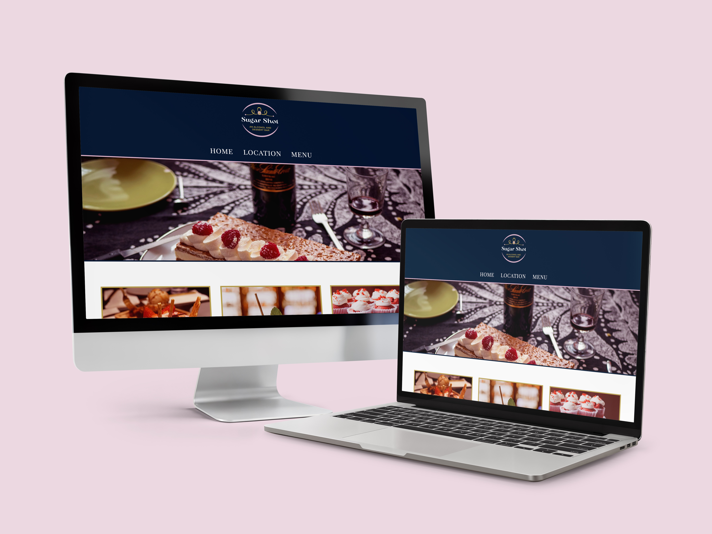
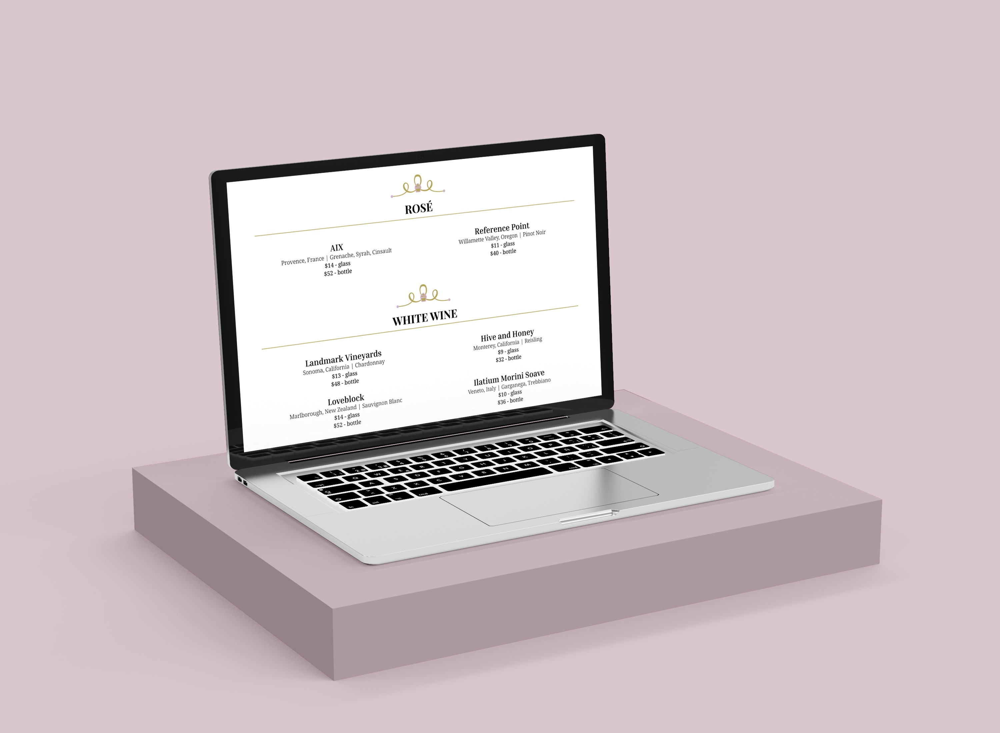
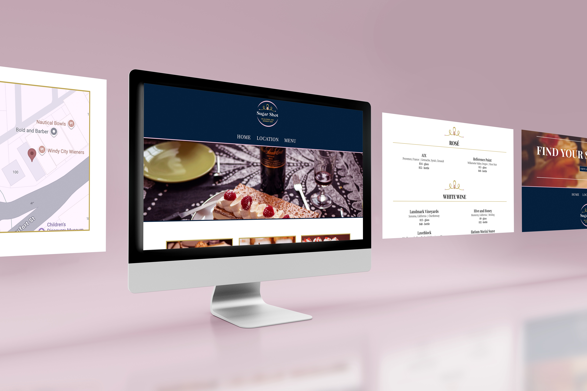
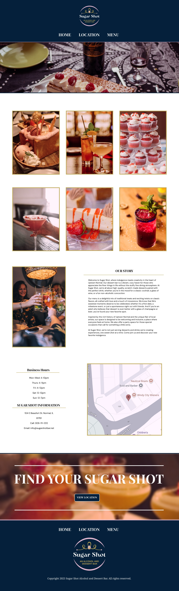

Sugar Shot Website
The dessert bar “Sugar Shot” needed a website for their business, and my task was to create a fine dining vibe that offers alcoholic drinks and desserts. This website is designed to feel lively, inviting, and cozy, while still maintaining a fine dining atmosphere.
I designed and coded a website that felt luxurious yet cozy and cute. I used small details of decals throughout the menu, and within the logo while also keeping a professional look of order and organization throughout. I chose a primary color palette of dark blue, pink, and gold. Pink represents the cute, sweet, and comfortable part of this company, while the dark blue and gold uphold the fine dining, concise feel.
Tools: Visual Studio Code
Year: Fall, 2025



